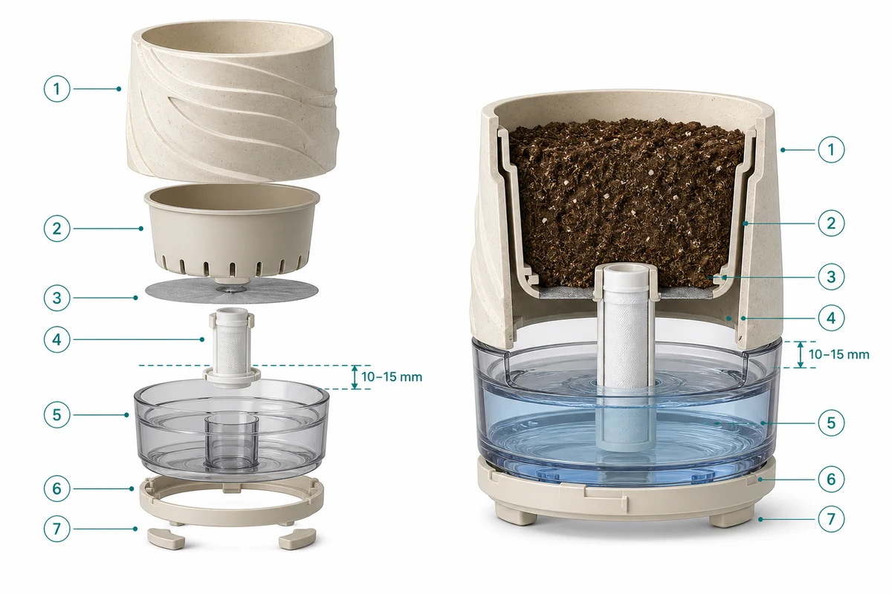

私域销售实习生
负责约 4000 元英语长期班的潜在用户筛选、商务沟通、关系维护与成交推进。
- 70万元+
- 累计营收贡献
- 180名
- 累计付费学员
- 2 → 9单
- 单轮成交提升
- 判断客户：按年级、基础、投入度和目标识别意向，调整沟通重点与跟进节奏。
- 推进成交：处理价格、竞品和退款等异议，并重新触达历史用户，推动单轮业绩进入团队第一。
- 放大方法：创建 8 个垂直场景 AI 智能体，相关方法同步至 60 人以上团队并纳入新人培训。
SALES · CUSTOMER · SOLUTION
2027 届自动化技术与应用本科生。有一年用户转化经历，也做过 AI 数据评估和场景产品项目，希望在销售或客户成功方向继续积累。
先看销售经历
01 / EXPERIENCE
负责约 4000 元英语长期班的潜在用户筛选、商务沟通、关系维护与成交推进。
围绕大学生职业认知课程参与引流策划、线上线下宣传、咨询与销售，并组织线下宣讲；累计招募 6 名学员，创收 1.9K 元。
围绕 9.9 元大学规划课设计裂变机制、邀约话术和阶梯奖励；后期 999 元课程个人成交 4 单，所在团队获得冠军。
参与大学生线上活动的招募、用户承接、现场互动与转化跟进，共创 8 场单场 250 人以上活动；负责邀约、入群、提醒和现场陪伴，并持续跟进参与情况与用户反馈。
围绕大模型真实用户问答质量，评估复杂样本，归纳典型 Bad Case，并提交可复核的结构化反馈。持续接触真实用户表达，也形成了对 AI 产品边界和常见问题的具体理解。
02 / HOW I SELL
先看目标、基础和投入意愿，再决定沟通重点。
分别处理价格、竞品、信任和时间安排，明确下一步。
记录高频问题，整理成模板或工具，减少重复工作。
03 / FIELD PROJECTS
这些项目从具体场景出发，也让我练习怎样发现问题、组织方案并把想法讲清楚。
CASE 01
面向想养花却不熟悉养护，或因忙碌和出差忘记浇水的人，提出以再生塑料自吸水花盆为主要产品，并用配套小程序承接购买后的养护查询与成长记录。



CASE 02
在早期方案获奖后继续复盘使用场景，形成出行端、家属端和治理端三端协同方案：帮助盲人识别障碍，也让家属了解行程，让治理人员承接事件处置。


CASE 03
为线下活动中想社交却不容易开口的人设计 AI 社交名片。用户先用信号表达是否愿意被打扰，再由软件帮助双方找到破冰话题。


04 / CONTACT
南京工业职业技术大学
自动化技术与应用 · 本科
CET-4 577 / CET-6 472